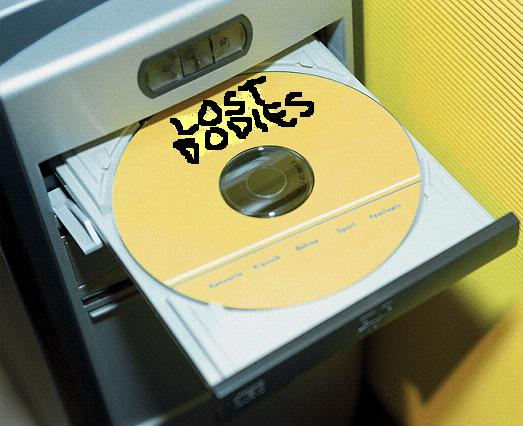

Πρόβλημα: Δεν ξέρουμε πως να κλείσουμε το πορτάκι του cd
Τρόπος της γραμματέως: Βγάζουμε πρώτα την κούπα του καφέ από το πορτάκι κι ύστερα φωνάζουμε τον τεχνικό για βοήθεια.
Τρόπος του χακερά: Πηγαίνουμε στο δικτυακό τόπο http://www.apolatakaloudia.com, βρίσκουμε σχετικό πρόγραμμα, το κατεβάζουμε, κατεβάζουμε και το crack του από το http://www.olataspame.pir και το εγκαθιστούμε.
Τρόπος του μηχανικού: Σπρώχνουμε με τα δάχτυλα το πορτάκι προς τα μέσα για λίγο, έχοντας παρατηρήσει ότι από κάποιο σημείο συνεχίζει μόνο του.
Τρόπος του μαθηματικού: Έστω χ το πορτάκι και ψ η κατάστασή του, όπου ψ ε {ανοιχτό, κλειστό}...
Τρόπος του "σπασίκλα": Κάθεσαι για 72 συνεχόμενες ώρες στον υπολογιστή, γράφεις ένα πρόγραμμα που το κάνει χρησιμοποιώντας κλήσεις συστήματος. Προσθέτεις πλήρη τεκμηρίωση, άδεια χρήσης (συνήθως κάτι σε free), το ανεβάζεις στην ιστοσελίδα σου μαζί με κείμενο 5 σελίδων για επεξήγηση και απαντάς προσωπικά στα χιλιάδες ηλεκτρονικά μηνύματα των χρηστών που θα το κατεβάσουν. Προαιρετικά: Ιδρύεις ένα μη κερδοσκοπικό σύλλογο για την προώθηση του προγράμματος, τυπώνεις μπλουζάκια με το λογότυπό του, οργανώνεις συναντήσεις ανά τον κόσμο των φανατικών χρηστών του κλπ.
Τρόπος του σύμβουλου της επιχείρησης: "Ο υπολογιστής δεν είν' ακόμα στην εγγύηση; Τον δίνουμε πίσω και μας φέρνουν έναν ολοκαίνουριο."
Τρόπος του συνδικαλισμού: Όλο το γραφείο κάνει απεργία πείνας μέχρι να κλείσει το πορτάκι. (Μετά από 62 μέρες απεργίας, ο αγώνας τελικά δικαιώνεται)
Τρόπος του Μαγκάιβερ: Βγάζουμε το καπάκι του ρυθμιστικού διακόπτη των ηχείων, παίρνουμε την μπαταρία από ασύρματο ποντίκι, την κεραία από το διπλανό ραδιόφωνο και μερικά τρανζίστορ από το μόντεμ και φτιάχνουμε έναν απλούστατο ηλεκτρονικό μηχανισμό που κλείνει το πορτάκι μόλις βραδιάσει.
Ψυχοαντιδραστικοβιολογικός τρόπος: Ανοίγουμε το παράθυρο ώστε να πέσει η θερμοκρασία του χώρου, να αιθανθεί κρύο το cd και να κλείσει από μόνο του.
Κρητικός τρόπος: Βγάζουμε το Ούζι και πυροβολούμε το cd τραγουδώντας σχετική αυτοσχέδια μαντινάδα.
Ποντιακός τρόπος: Δίνουμε μια κλωτσιά στην οθόνη.
Πολιτικά ορθός τρόπος: Με αφορμή το πρόβλημα στο κλείσιμο του καπακιού του cd συνειδητοποιούμε τα αδιέξοδα της σύγχρονης παγκοσμιοποιημένης κοινωνίας, την κρίση του καπιταλισμού και την αποξένωση από το πραγματικό είναι της ανθρώπινης φύσης, τον κοινωνικόοικονομικό- πολιτιστικό σεκταρισμό και το προτσές της ενσωμάτωσης του ελεύθερου χρόνου στην εργασία με σκοπό την απογύμνωση του ανθρώπου από κάθε είδος ψυχικής έπαρσης και τη δημιουργία αυτόνομων, αλλά εξαρτημένων σφαιρών επιρροής...
Σουρεαλιστικός τρόπος: Φωνάζουμε "Βαγγέλη!!!" και το πορτάκι κλείνει αυτόματα. (Βλέπε την ταινία "Μια Ελληνίδα στο χαρέμι" για περισσότερες πληροφορίες.)
Ψωνισμένος τρόπος: Φωνάζουμε όλα τα κανάλια. Μας βγάζουν στα παράθυρα σε όλες τις σχετικές εκπομπές. Προβάλλεται και το σχετικό ριάλιτυ: "Κλείσε το πορτάκι". Το πορτάκι ίσως να είναι ακόμα ανοιχτό, αλλά εμείς γίναμε πασίγνωστοι στο Πανελλήνιο.
Cool τρόπος: Στέλνουμε από το κινητό ένα μήνυμα στο 1515 ή παίρνουμε στο 9011 23 24 25 στην πιο ζωντανή παρέα κλεισίματος πορτακίων cd υπολογιστών.
Καλλιτεχνικός τρόπος: Γυρίζουμε μια ταινία με τίτλο "Το ανοιχτό πορτάκι". Το Ελληνικό Κέντρο Κινηματογράφου μας επιχορηγεί και κερδίζουμε 7 βραβεία στο Φεστιβάλ Κινηματογράφου Θεσσαλονίκης.
Δημοσιοϋπαλληλικός τρόπος: "Δε βαριέσαι, ας μείνει ανοιχτό. Αερίζεται καλύτερα έτσι..."
Τρόπος του Σημίτη: Δημιουργούμε 12.000 νέες θέσεις εργασίας (προσλαμβάνοντας συμβασιούχους για να κλείνουν το πορτάκι) συμβάλλοντας έτσι στην απορρόφηση του Κοινοτικού Πλαίσιου Στήριξης. Δήλωση Μητσοτάκη: "Ας μείνει ανοιχτό. Σε 10 χρόνια, έτσι κι αλλιώς θα το έχουμε ξεχάσει..."
Βιβλικομεταμοντέρνος τρόπος: Παίρνουμε το μηχάνημα, τον Αρχιεπίσκοπο και 200 ιερείς του Βάαλ και ανεβαίνουμε σε ένα ψηλό βουνό. Οι 200 ιερείς προσεύχονται επί 3 ημέρες και το πορτάκι δεν κλείνει. Μόλις κάνει ο Αρχιεπίσκοπος ένα σταυρό, το πορτάκι κλείνει αμέσως. Όλοι μένουν έκπληκτοι με το θαύμα. Το βουνό κηρύσσεται αμέσως ιερό και απ' όλα τα μέρη της Ελλάδας καταφτάνουν πιστοί για να προσκυνήσουν τον ιερόυπολογιστή. Τα κέρδη της Εκκλησίας από τα εισητήρια και τις εισφορές υπολογίζονται σε πάνω από 2 εκ. ευρώ.
Τρόπος της κας Ελένης Λουκά: Καίμε το πορτάκι μαζί με τον υπολογιστή για να τα λυτρώσουμε από το Σατανά.
Τρόπος των αναρχικών: Όπως προηγουμένως, αλλά καίμε και ολόκληρο το γραφείο μαζί...
Στρατιωτικός τρόπος: Το πορτάκι διατάσσεται από τον αξιωματικό υπηρεσίας να κλείσει. Εφ' όσον δεν υπάρχει απάντηση (και καμία αντίδραση γενικώς), καταδικάζεται σε στέρηση εξόδου, αγγαρεία στα μαγειρία και 10ήμερη φυλάκιση για απειθαρχία και ασέβεια προς ανώτερο. "
bofmar
|